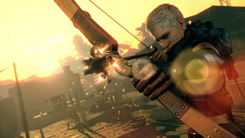
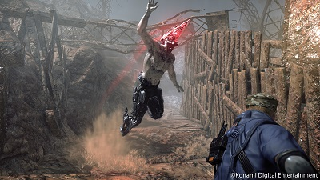
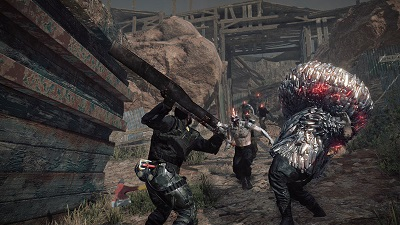

¿La franquicia de Metal Gear Solid ha muerto?

Nadie puede decir que la franquicia de Metal Gear Solid no es una de las más representativas del medio, con cada entrega han sabido evolucionar creando una de las fórmulas más originales del medio, un juego en el que el espionaje, el drama, la acción y lo fantástico se unen para entregarnos una odisea videojueguil como pocas. Desde el NES, esta franquicia consiguió hacerse notar por el público, pero no fue hasta el 98, tomando ahora al primer Playstation como plataforma base, que Konami y su desarrollador emergente, Hideo Kojima, se abrieron paso ante los nombres más respetables de aquel momento.
Años han pasado y varios juegos lo han hecho tener ahora 5 títulos canónicos y varios juegos alternos, pero si no has vivido debajo de una roca estos últimos años, sabrás que ahora esa dupla, o sea: Konami y Hideo Kojima, ya no es precisamente la más unida, de hecho, Kojima, creador y principal creativo detrás de la franquicia de Metal Gear Solid ya no trabaja más para Konami, pero como cualquier estudio y productora, Konami es quien se queda con los derechos de la propiedad intelectual, por lo que el creador de la saga ya no puede seguir trabajandola.

Esto despierta al debate: ¿La franquicia de Metal Gear Solid ha muerto?, en primera instancia podría sonar exagerado, pero hubo un catalizador que provocó el empezar a ver a Konami, lo más parecido a lo que la gente suele llamar "dar patadas de ahogado". Esto cuando se anunció el último título que vendría con el nombre "Metal Gear", este es por supuesto, Metal Gear Survive.
Aún es demasiado temprano como para decir si el juego será bueno o no, si cumplirá con lo indispensable que deben de tener un título con ese nombre, o si honrará todo lo creado por la franquicia todos estos años, sin embargo, la particular temática del juego y el momento en el que se presenta, deja mucha oportunidad para abrir el diálogo sobre una posible caída de la franquicia originada por Kojima.
Metal Gear Survive toma lugar poco antes de los sucedido en Metal Gear Solid 5: The Phantom Pain. Al parece algo ha provocado que soldados de la Mother Base se transporten a otra realidad donde yacen un sinfín de zombis agresivos conocidos ahí como "las creaturas". El título tiene una base jugable totalmente en línea y será un juego de supervivencia donde nosotros y otros amigos, tendremos que sobrevivir ante oleadas de zombis bajo una ya característica jugabilidad en 3ra persona.

Evidentemente la premisa de Metal Gear Survive se aleja muchísimo de los que representa la serie, y sobretodo, se ve que se aleja de su intención primordial por contar grandes historias sobre experiencias más interactivas, donde la interacción en línea es más importante que la historia que nos intenta contar. Hay quienes quiera sacar a colación juegos como Metal Gear Rising: Revengeance que también se alejan del hilo negro de la saga, pero deben de tener en cuenta que este juego, además de tomar un personaje bien conocido por la entregas pasadas, también enfoca todas sus fuerzas en la jugabilidad de Raiden, y la historia que se pueda sacar de ella es trascendental, a pesar que el estudio que desarrolla es Platinum Games, quienes siempre se han enfocado en títulos con jugabilidad rápida y bien implementada.
No podemos adelantarnos y decir sin temor a equivocarnos que Metal Gear Survive significa la caída de la franquicia que tanto esfuerzo le costó a Kojima hacer crecer, pero por lo visto y por el poco entusiasmo que se le ve a Konami, podemos empezar a imaginarnos un futuro sin mucha actividad por parte del Big Boss y su universo.